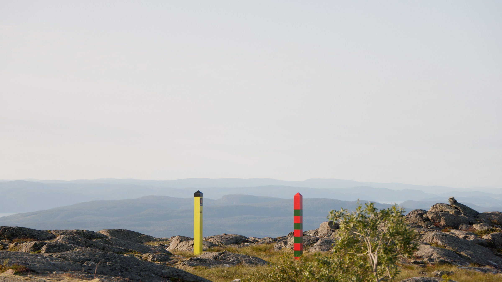
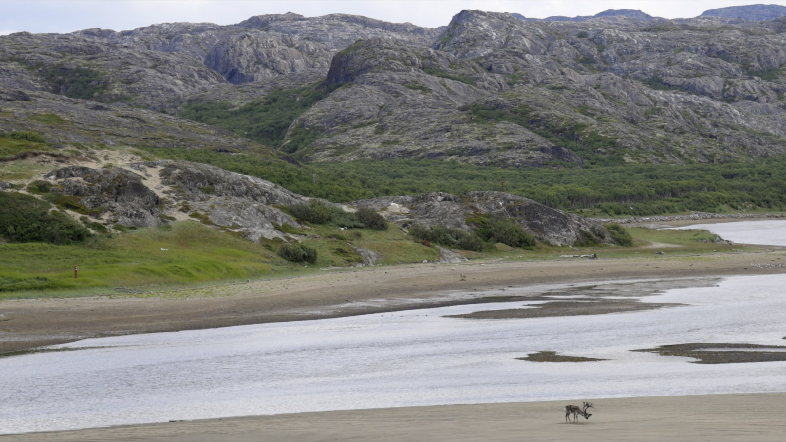
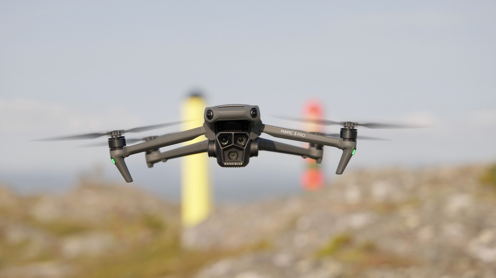
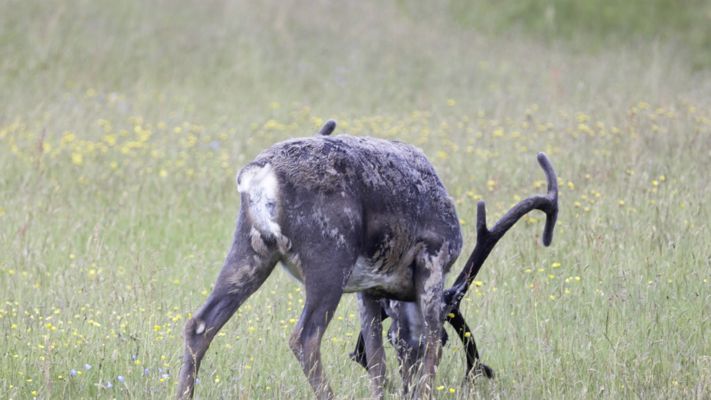
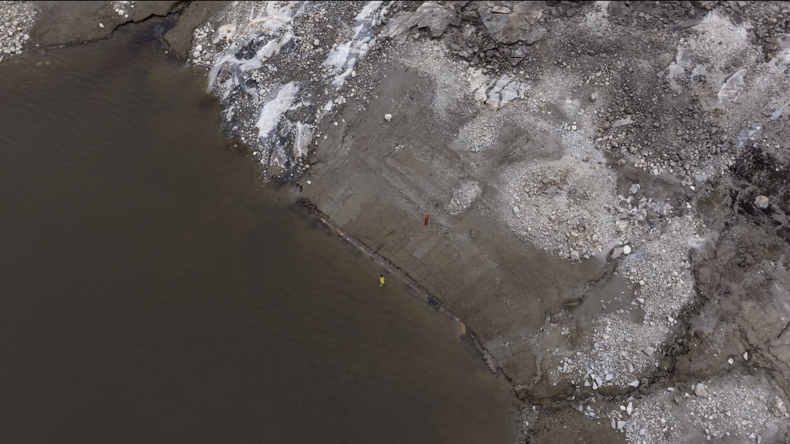
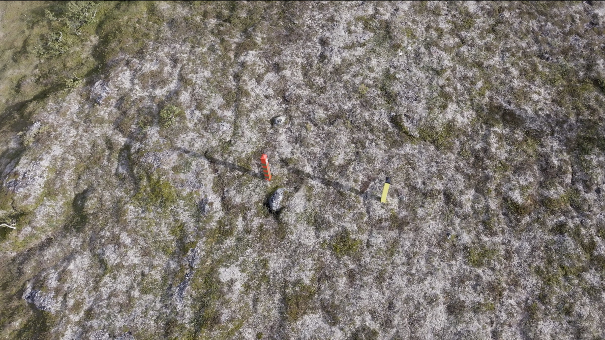

Ingenmannsland, 2026
Ingenmannsland moves between the Norwegian–Russian border and a reconstructed border landscape made elsewhere. As the two locations begin to resemble one another, it becomes difficult to tell where the border’s authority actually resides. The border poles and the drones used to observe them become actors in the film.






Voice: Acapela “Olav”
Supported by Kulturrådet and Trøndelag fylkeskommune
Supported by Kulturrådet and Trøndelag fylkeskommune